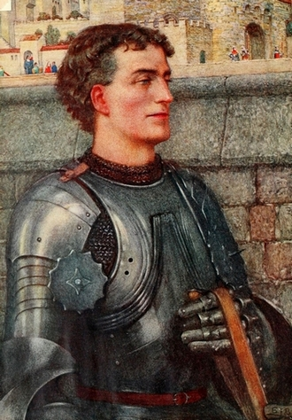
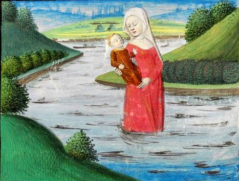
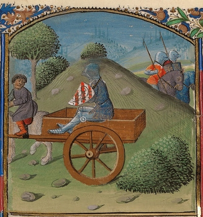
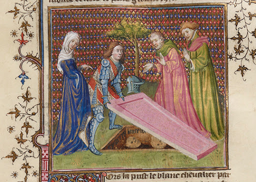
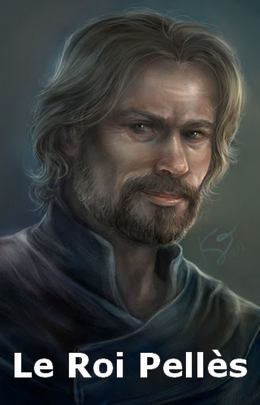
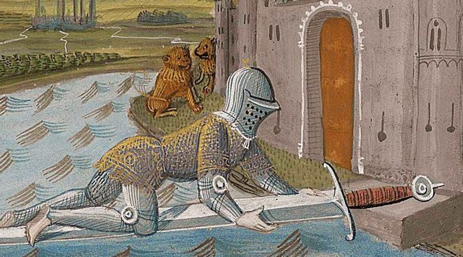
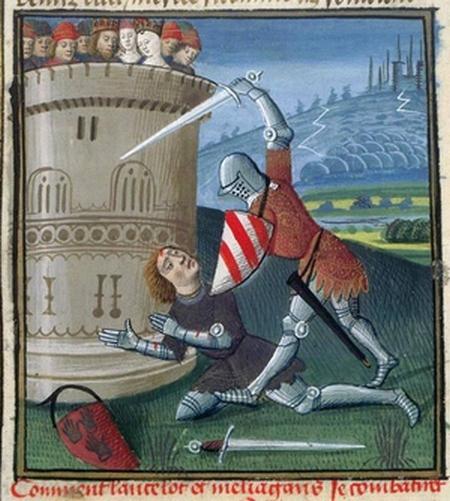

Le Roi Ban* fut trahi et obligé de fuir son château de Benoïc, accompagné de sa femme Hélène et de leur fils âgé de quelques mois. Une petite troupe de cavaliers assurait la sécurité du couple royal. Le peloton arriva près d'un lac. Le Roi Ban* en apercevant à l'horizon, son château pris dans les flammes, mourut de chagrin. Soudain, une femme sublime sortit du lac, comme par miracle. Elle se saisit de l'enfant, et, en ignorant les protestations d'Hélène, fit demi-tour en disparaissant dans le lac.

Ce lac est un lac d'illusion, créé par la fée Viviane*, la Dame du Lac. En effet, ce lac mène à son palais, celle-ci entreprend l'éducation du garçon, avec l'aide d'un précepteur : Caradoc. Elle ne lui donna jamais de nom, elle l'appela toujours "L'Enfant".
En grandissant, le jeune homme acquit de nombreuses qualités telles que l'intelligence, le courage, la bravoure et la beauté. Lorsqu'il commença à se poser des questions sur ses origines, Viviane* lui expliqua qu'il trouverait ses réponses en accomplissant son destin
Viviane*, L'Enfant, ainsi qu'une escorte de chevaliers, prirent la route pour Camaalot, un des châteaux du Roi Arthur*.
Ils arrivèrent à Camaalot pour la Saint Jean, une fête où Arthur adoubait de nouveaux chevaliers. Viviane* confia L'Enfant au modèle de la chevalerie : Gauvain*, pour le préparer à la cérémonie. Gauvain* se prit d'amitié pour L'Enfant, qui ignorait son nom.

Le lendemain, Le Roi Arthur et Guenièvre* se présentèrent à l'assemblée. L'Enfant échangea un regard avec Guenièvre*, il en fut tout troublé : il aimait la Reine ! Mais cela n'était pas concevable, un individu bientôt chevalier, ne pouvait pas aimer la femme de son Roi !
La cérémonie débuta, Arthur allait adouber ses futurs chevaliers. Mais l'Enfant, en se rendant à l'adoubement, toujours troublé par ses sentiments, en oublia son épée dans sa chambre. Lorsqu'il s'en rendit compte, il alla la chercher en courant.
Lorsque L'Enfant revint dans la grande salle, son épée à la main, un cavalier vêtu de noir pénétra dans Camaalot, toujours sur sa monture. Cet homme se nommait Méléagant* et voulait se venger d'Arthur, puisqu'il avait été rejeté par le Roi, lorsqu'il avait voulu combattre à son service. Méléagant* cria en regardant Arthur : "Je te défie, toi, Arthur, ou n'importe lequel de tes chevaliers, en combat singulier ! Si je l'emporte Guenièvre* m'appartiendra !"
Arthur devait relever le défi de Méléagant*, pour ne pas passer pour un lâche, cependant en tant que Roi, il ne pouvait pas combattre lui-même. Il hésita alors sur le chevalier qu’il envierait au combat. C'est alors que Ké* répondit à Méléagant*, qu’il affronterait sur le près dans une heure. Méléagant* reparti, et la foule fut consterné ; en effet Ké* voulais toujours se battre pour des idioties, mais il n'était pas un bon chevalier.
Ké* alla à la rencontre de Méléagant*, le combat put commencer. Au premier choc Ké* fut blessé, il tomba de son cheval, laissant Guenièvre* captive de Méléagant*, qui se dirigeait vers son château, sur l’île de Gorre.
L'enfant quitta Camaalot, est parti, au galop, à la recherche de Guenièvre*. Gauvin qui était responsable de l’enfant, le suivit et finit par le rattraper. Le destrier* de l’enfant était mort de fatigue, le jeune homme continuait sa route à pied.

Les chevaliers arrivèrent dans un village, un nain conduisait une charrette, qui servait à transporter les condamnés à mort. Le nain proposa à l’enfant de le conduire, où Guenièvre* avait été enlevée. Gauvin demanda à l'enfant de ne pas monter dans cette charrette afin de ne pas perdre son honneur. L’enfant qui se moquait bien de ce qu’on pouvait penser de lui, monta dans la charrette, en pensant à sauver Guenièvre* au plus vite. Gauvin suivi la charrette.
Le nain déposa L'enfant à l'entrée d'un château, Gauvin rejoignit L'enfant. Les chevaliers furent accueillis par une femme, pleine d'admiration pour Gauvain*. Cependant, elle méprisait L'enfant, qui était monté dans la charrette des condamnés. Les chevaliers dinèrent avec la maîtresse des lieux, puis la femme les conduit jusqu'à leur chambre.
Au milieu de la nuit, L'enfant se réveilla, il se leva de son lit. Soudain, une lance tomba du plafond, en tranchant le lit sur toute la longueur. L'enfant en fut terrifié, la lance était tombée à l'endroit précis, où se trouvait L'enfant il y a quelques secondes. L'enfant, fou de rage, à l'idée d'avoir été pris pour cible personnellement, partit rejoindre Gauvain*. Après avoir retrouvé Gauvain*, L'enfant fouilla le château à la recherche de la femme qui les avait accueillis, en vain.
Ce que les chevaliers ignoraient, c'est que sous l'apparence de la chatelaine, il avait croisé la Fée Morgane*. L'enfant au pouvoir insoupçonnés, était devenu une femme aux pouvoirs exceptionnels. Morgane* représentait donc un véritable danger
L'enfant et Gauvain* se séparèrent à un carrefour, afin de rejoindre L'île de Gorre par deux ponts différents. L'enfant se dirigeait vers Le Pont de L'épée, un pont constitué d'une unique lame, aussi fine qu'une épée. Gauvain* se dirigeait vers Le Pont Sous L'eau, un pont englouti sous l'eau.

L'enfant qui continuait sa route, tomba sur un village morne où deux jeunes fiancés, Ellan* et Galehot lui demandaient son aide. L'enfant appris qu'une malédiction avait frappé le village et que la seule façon de le sauver était de vaincre un monstre terrible. L'enfant fut sensible à leurs détresses, il décida de les aider. L'enfant descendit dans un puits et vaincu le monstre.
Le village reprit vie, Ellan* emmena L'enfant jusqu'à un cimetière et elle lui désigna une tombe. Selon Ellan*, c'était la tombe de L'enfant, elle lui demanda de soulever la pierre tombale. L'enfant, troublé, souleva la pierre. La tombe était vide, elle portait plusieurs inscriptions : sa date de naissance et cette phrase : "Ci-gira Lancelot, fils du Roi Ban de Bénoïc*."

L'enfant désormais Lancelot reprit sa route avec Ellan* et Galehot. Ils arrivèrent à l'entrée d'un château, Lancelot vit un vieil homme qui péchait dans les douves. Ellan* lui appris que c'était son père, le Roi Pellès*. Le Roi accueillit Lancelot, en lui disant qu'il l'attendait depuis longtemps.
Lancelot alla dans la grande salle du château ; il fut rejoint par le Roi Pêcheur, qui, ayant perdu l'usage de ses jambes, était porté par des domestiques.
Le Roi Pellès* fut installé à une table, où un festin avait été préalablement préparé. Il invita Lancelot à le rejoindre. Lancelot mangea peu, la pensé de Guenièvre* captive de Méléagant* l'obsédait, il avait hâte de repartir à son secours.
Lancelot vit un valet entrer dans la salle en tenant une lance dont la pointe saignait. Ellan* entra à son tour, elle tenait un plat creux dans ses mains, une lumière éblouissante s'échappait du plat.
Aussitôt, Pellès* demanda à Lancelot :"N'as tu pas deux questions à poser ?". Lancelot, par politesse, chercha des questions à lui poser ; mais il n'en trouva aucunes, il songeait plutôt au moyen de sauver Guenièvre*. Le Roi Pêcheur déçu, lui dit : "Retire-toi, tu n'es pas L'Élu".
Une nuit, Lancelot dormait dans une chambre du château. Il fut réveillé lorsqu'une femme rentra dans sa chambre. Lancelot n'en croyait pas ses yeux, c'était Guenièvre*. Le chevalier voulu comprendre comment cela était possible. Mais Guenièvre* le rejoignit, en lui expliquant qu'elle était là parce qu'ils s'aimaient. Ils passèrent la nuit ensemble.
Le lendemain, Lancelot se réveilla ; cependant Guenièvre* avait disparue. Il là chercha dans le château, désert, en vain. Lancelot finit par croiser Galehot, il lui fit part de son incompréhension. Galehot lui confia ce qu'il savait. Lancelot n'en revenait pas ; il avait été trompé par Ellan*, qui avait pris l'apparence de Guenièvre*.

Lancelot arriva enfin aux abords de l'île de Gorre, il trouva le pont de l'épée : un pont aussi tranchant que la lame d'une épée.
Lancelot s'y aventura, et au péril de sa vie, les membres en sang, il le franchit. Au cours de sa périlleuse traversée, il pensait à Guenièvre*, cela lui faisait oublier la douleur.
Arrivé sur l'autre rive, il rejoignit Gauvain*, qui avait emprunté Le Pont sous l'eau. Les chevaliers furent heureux de se retrouver, sains et saufs.
Après de courtes retrouvailles, les chevaliers partirent assiéger le château de Méléagant*. Ils éliminèrent les soldats de l'île, puis ils s'introduisirent dans l'édifice. Les chevaliers finirent par tomber sur Méléagant*, Lancelot le défia. Méléagant* accepta l'affrontement, Lancelot était qu'un jeune chevalier, sans expérience, le vaincre devrait être une formalité.

Le duel commença dans la cour du château, les deux adversaires à cheval, partirent à l'assaut. Lancelot tomba à terre, au premier choc. Méléagant* crut à la victoire, mais Lancelot déterminé, le fit chuter de son cheval. Ils continuèrent l'affrontement à pied. Lorsque Lancelot fut touché par l'épée de Méléagant*, il regarda Guenièvre*, puisa dans ses dernières forces ; puis il frappa Méléagant* à mort.
Lancelot, triomphant se présenta à Guenièvre*. La Reine aimait Lancelot, mais elle réalisa que c'était un péché, une forme de trahison envers Arthur. Elle attendit que Lancelot avoue son attirance pour elle. Mais le chevalier intimidé, se croyant méprisé par sa Reine, ne dit pas un mot.
Après être sortit de Gorre, Gauvain* escorta Guenièvre* jusqu'à Camaalot. Lancelot, était déçu par lui-même ; il avait aimé Guenièvre*, la femme de son propre Roi. Lancelot se croyait misérable ; il n'eut pas le courage de rentrer à Camaalot.
Lancelot décida de voyager à travers le monde, il cherchait des défis à relever, en espérant mourir au combat, ce qui métrait fin à sa détresse. Pendant des années, il défia de nombreux chevaliers, mais il demeurait le meilleur chevalier de monde, de ce fait Lancelot sortit vainqueur de tous ses combats.
Lancelot paraissait invincible, son unique faiblesse était son amour impossible pour Guenièvre*. Cette même faiblesse qui l'avait empêché de trouver le Graal. La Quête du Graal restait inachevée.
Haut de Page